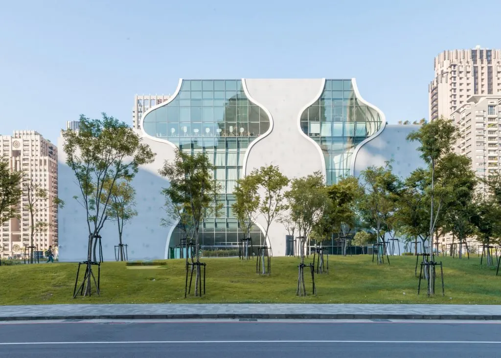
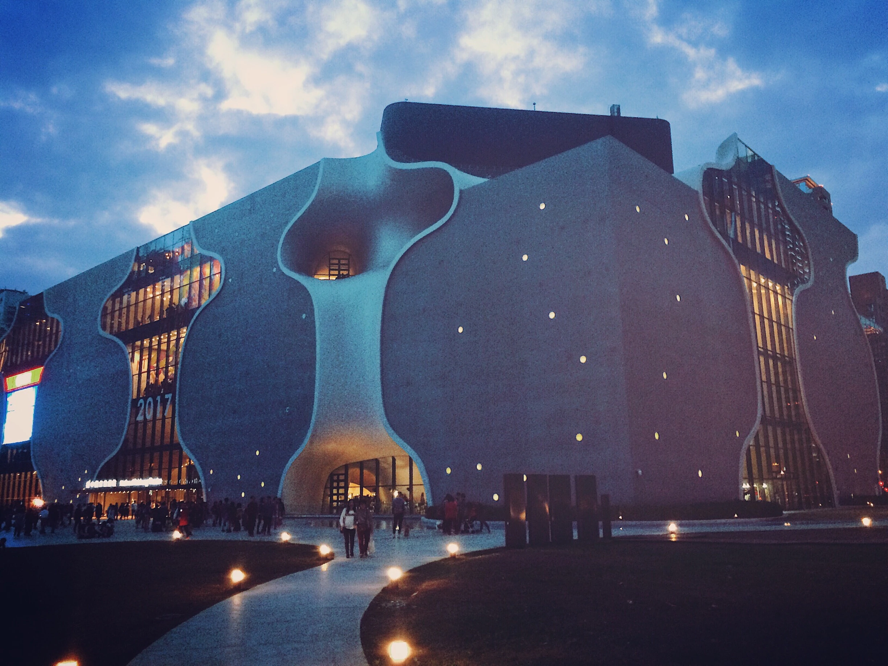

Opéra métropolitain de Taichung
L’Opéra métropolitain de Taichung est une maison d’opéra située dans la 7e zone de réaménagement de Taichung , dans le district de Situn, à Taïwan. Il a été conçu par l’architecte japonais Toyo Ito en collaboration avec Cecil Balmond d’Arup AGU. Il a été inauguré officiellement en 2016.
Le bâtiment a une forme inhabituelle constituée de composants incurvés recouverts d’une couche de béton projeté. Il abrite trois théâtres, dont un avec une capacité pour 2 000 places, un autre pour 800 places et le plus petit pour 200 places. Le bâtiment comprend également des salles de répétition et un restaurant.
L’Opéra métropolitain de Taichung est un symbole du développement culturel et artistique de Taïwan. Il accueille des spectacles variés, tels que des opéras, des ballets, des concerts et des pièces théâtrales. Il est également un lieu d’exposition et d’éducation pour le public.